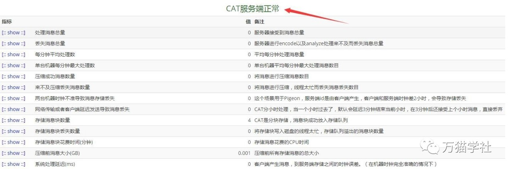
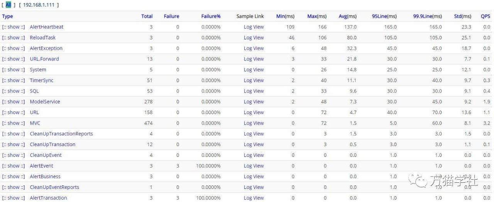

原文连接:https://www.cnblogs.com/heihaozi/p/11762894.html
一、CAT简介

CAT（Central Application Tracking），是美团点评基于 Java 开发的一套开源的分布式实时监控系统。美团点评基础架构部希望在基础存储、高性能通信、大规模在线访问、服务治理、实时监控、容器化及集群智能调度等领域提供业界领先的、统一的解决方案，CAT 目前在美团点评的产品定位是应用层的统一监控组件，在中间件（RPC、数据库、缓存、MQ 等）框架中得到广泛应用，为各业务线提供系统的性能指标、健康状况、实时告警等服务。
二、部署环境
- Windows 7
- CAT 3.0
- Java 8
- Tomcat 8.5
- Maven 3
- MySQL 5.7
- 内网IP：192.168.1.111
三、开始部署
1.下载CAT源码
git clone https://github.com/dianping/cat.git2.初始化数据库
在MySQL中创建cat数据库，然后执行script/Cat.sql中的SQL语句。
3.创建配置文件
在Tomcat所在的盘中创建/data/appdatas/cat文件夹，然后创建/data/appdatas/cat/client.xml文件，写入如下内容：
<?xml version="1.0" encoding="utf-8"?>
<config mode="client">
<servers>
<server ip="192.168.1.111" port="2280" http-port="8080"/>
</servers>
</config>其中，192.168.1.111改为你电脑的内网IP，2280是默认的CAT服务端接受数据的端口，不允许修改，http-port是Tomcat启动的端口，默认是8080，建议使用默认端口。
再创建/data/appdatas/cat/datasources.xml文件，写入如下内容：
<?xml version="1.0" encoding="utf-8"?>
<data-sources>
<data-source id="cat">
<maximum-pool-size>3</maximum-pool-size>
<connection-timeout>1s</connection-timeout>
<idle-timeout>10m</idle-timeout>
<statement-cache-size>1000</statement-cache-size>
<properties>
<driver>com.mysql.jdbc.Driver</driver>
<url><![CDATA[jdbc:mysql://192.168.1.111:3306/cat]]></url> <!-- 请替换为真实数据库URL及Port -->
<user>root</user> <!-- 请替换为真实数据库用户名 -->
<password>root</password> <!-- 请替换为真实数据库密码 -->
<connectionProperties><![CDATA[useUnicode=true&characterEncoding=UTF-8&autoReconnect=true&socketTimeout=120000]]></connectionProperties>
</properties>
</data-source>
</data-sources>其中，需要替换的有：数据库IP、port、用户名和密码。
4.CAT的war部署
使用Maven构建AT的war：
mvn clean install -DskipTests构建成功后，将cat-home/target/cat-alpha-3.0.0.war重命名为cat.war，复制到Tomcat的webapps下，启动tomcat。
5.修改路由配置
访问http://192.168.1.111:8080/cat/s/config?op=routerConfigUpdate，默认用户名：admin 默认密码：admin，修改客户端路由配置：
<?xml version="1.0" encoding="utf-8"?>
<router-config backup-server="192.168.1.111" backup-server-port="2280">
<default-server id="192.168.1.111" weight="1.0" port="2280" enable="true"/>
<network-policy id="default" title="默认" block="false" server-group="default_group">
</network-policy>
<server-group id="default_group" title="default-group">
<group-server id="192.168.1.111"/>
</server-group>
<domain id="cat">
<group id="default">
<server id="192.168.1.111" port="2280" weight="1.0"/>
</group>
</domain>
</router-config>配置说明：
- backup-server属性：设置为当前服务器对外IP地址，端口固定为2280
- default-server属性：定义可跳转的路由地址，可以设置多个。default-server的id属性配置可路由的cat-home服务IP地址，端口固定为2280;若需要禁用路由地址，可把enable设置为false
- network-policy 这边可以配置多个不同网段，表示这个网段使用server-group的cat节点，这里面的作用主要是当多机房部署cat的时候，可以将cat分为多个多个子集群，然后多个子集群处理不同的客户端，避免跨专线访问
- domain id=cat 这部分主要是定制路由，当发现一些项目数据量特别大，或者其他场景，可以将这些domain的监控请求单独隔离处理
6.修改服务端配置
访问http://192.168.1.111:8080/cat/s/config?op=serverConfigUpdate，修改服务端配置：
<?xml version="1.0" encoding="utf-8"?>
<server-config>
<server id="default">
<properties>
<property name="local-mode" value="false"/>
<property name="job-machine" value="true"/>
<property name="send-machine" value="false"/>
<property name="alarm-machine" value="true"/>
<property name="hdfs-enabled" value="false"/>
<property name="remote-servers" value="192.168.1.111:8080"/>
</properties>
<storage local-base-dir="/data/appdatas/cat/bucket/" max-hdfs-storage-time="15" local-report-storage-time="2" local-logivew-storage-time="1" har-mode="true" upload-thread="5">
<hdfs id="dump" max-size="128M" server-uri="hdfs://127.0.0.1/" base-dir="/user/cat/dump"/>
<harfs id="dump" max-size="128M" server-uri="har://127.0.0.1/" base-dir="/user/cat/dump"/>
<properties>
<property name="hadoop.security.authentication" value="false"/>
<property name="dfs.namenode.kerberos.principal" value="hadoop/dev80.hadoop@testserver.com"/>
<property name="dfs.cat.kerberos.principal" value="cat@testserver.com"/>
<property name="dfs.cat.keytab.file" value="/data/appdatas/cat/cat.keytab"/>
<property name="java.security.krb5.realm" value="value1"/>
<property name="java.security.krb5.kdc" value="value2"/>
</properties>
</storage>
<consumer>
<long-config default-url-threshold="1000" default-sql-threshold="100" default-service-threshold="50">
<domain name="cat" url-threshold="500" sql-threshold="500"/>
<domain name="OpenPlatformWeb" url-threshold="100" sql-threshold="500"/>
</long-config>
</consumer>
</server>
<server id="192.168.1.111">
<properties>
<property name="job-machine" value="true"/>
<property name="send-machine" value="false"/>
<property name="alarm-machine" value="true"/>
</properties>
</server>
</server-config>配置说明：
server节点：代表一台机器的配置。如果id为default，代表默认配置；如果id为ip，代表该台服务器的配置
- local-mode : 定义服务是否为本地模式（开发模式），在生产环境时，设置为false,启动远程监听模式。默认为 false;
- hdfs-machine : 定义是否启用HDFS存储方式，默认为 false；
- job-machine : 定义当前服务是否为报告工作机（开启生成汇总报告和统计报告的任务，只需要一台服务机开启此功能），默认为 false；
- alarm-machine : 定义当前服务是否为报警机（开启各类报警监听，只需要一台服务机开启此功能），默认为 false；
- send-machine : 定义当前服务告警是否发送（当时为了解决测试环境开启告警线程，但是最后告警不通知，此配置后续会逐步去除，建议alarm-machine开启为true的时候，这个同步为true）
storage节点: 定义数据存储配置信息
- local-report-storage-time : 定义本地报告存放时长，单位为（天）
- local-logivew-storage-time : 定义本地日志存放时长，单位为（天）
- local-base-dir : 定义本地数据存储目录
- hdfs : 定义HDFS配置信息，便于直接登录系统
- server-uri : 定义HDFS服务地址
- console : 定义服务控制台信息
- remote-servers : 定义HTTP服务列表，（远程监听端同步更新服务端信息即取此值）
- ldap : 定义LDAP配置信息（这个可以忽略）
- ldapUrl : 定义LDAP服务地址（这个可以忽略）
重新启动Tomcat。
四、验证
访问http://192.168.1.111:8080/cat/r，点击“State”，可以看到“CAT服务端正常”和CAT一些基本状态，如下图：

点击“Transaction”，CAT自身的监控信息，如下图：
